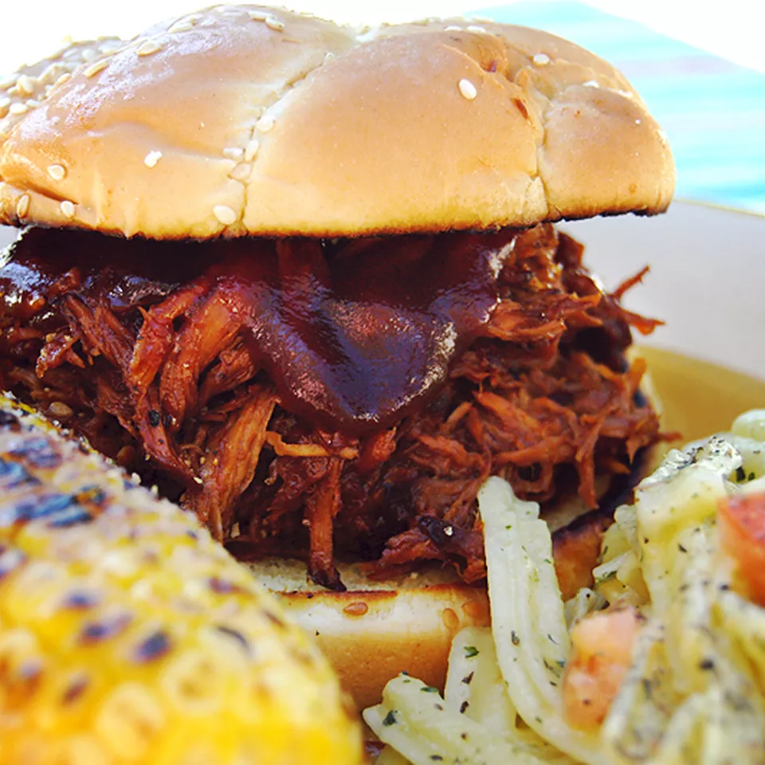

Slow Cooker Texas Pulled Pork

Description
This Texas-style pulled pork recipe has a tangy barbeque sauce that's easy to make in the slow cooker. I like to serve the shredded pork on toasted buttered rolls. My family's favorite!
Ingredients
- Oil
- Pork
- Bottled barbecue sauce
- Yellow mustard
- Worcestershire sauce
- Apple cider vinegar
- Broth
- Brown sugar
- Chilli Powder
- Garlic
- Dried Thyme
- Onion
- Hamburger Buns
- Pour oil into the slow cooker, then place the roast on top of the oil.
- Add the remaining ingredients to the Crock-Pot.
- Cover and cook until the pork shreds easily.
- Shred the pork and return it to the slow cooker to combine it with the juices.
- If you’re making sandwiches, serve the pulled pork on buttered buns.